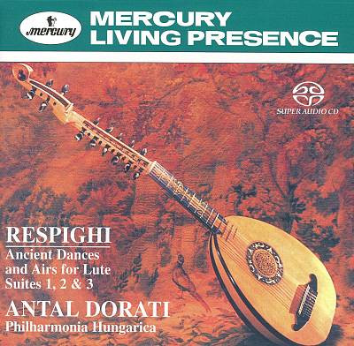

SACD
Ancient Dances And Airs For Lute · Suites 1, 2 & 3
Ottorino Respighi – Antal Dorati, Philharmonia Hungarica
Media: NM · Sleeve: NM
CA$124.00
Discogs SuggestedCA$137.90
Discogs MedianCA$137.90
Discogs HighCA$137.90
- Physical Copy ID
- BB-SACD-148
- Year
- 2004
- Label
- Mercury, Mercury Living Presence
- Catalog #
- 470 637-2, 470 637-2
- Country
- Europe
- Genre / Style
- Classical · Neo-Classical